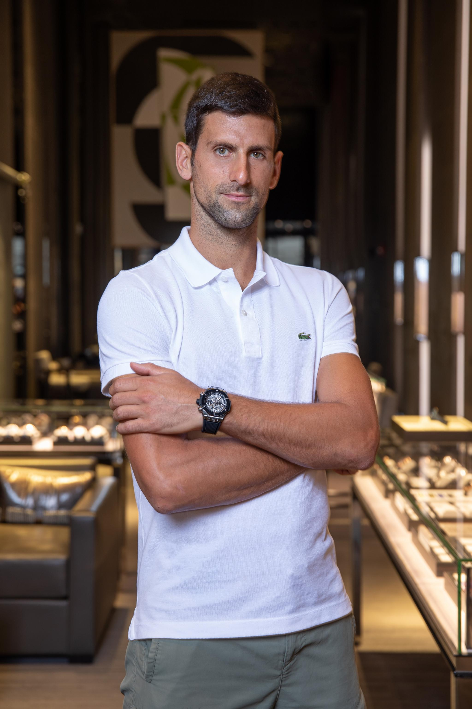

NOVAK ĐOKOVIĆ, NOVI HUBLOT AMBASADOR
Novak Đoković pridružio se obitelji Hublot u društvu legendarnih sportaša kao što su Pelé, Kylian Mbappé, Usain Bolt i Dustin Johnson! Nekoliko dana prije početka US Opena, prvi tenisač svijeta odlučio se postati ambasador švicarskog proizvođača luksuznih satova.
Nema potrebe predstavljati Novaka Đokovića – njegov rekord govori sam za sebe. Srpski tenisač osvojio je sve: 85 titula pojedinačno na ATP krugu, uključujući 20 Grand Slamova, 5 Masters i 36 Masters 1000 te olimpijsku medalju.
Njegova karijera dovela ga je do vrha ATP ljestvice prije više od deset godina, u srpnju 2011., na poziciji koju i danas drži... nakon 337 tjedana.
Jedini je igrač u Open eri koji je osvojio najmanje dva Grand Slam turnira. A niz je i dalje jak, jer će za nekoliko dana pokušati osvojiti svoj 21. naslov i tako srušiti rekord svih vremena po Grand Slam pobjedama u sljedećem kolu US Opena.
Već živa legenda, ali još uvijek na vrhuncu svoje igre, Novak Đoković odlučio se pridružiti velikoj obitelji Hublot ambasadora. Dijeli mnoge sličnosti sa švicarskom tvrtkom za izradu satova Hublot, među kojima je nemilosrdna težnja za izvrsnošću i performansama.
Ovo je veliki izvor ponosa za Hublot timove, koji pozdravljaju čovjeka koji se iz dana u dan dokazuje kao najveći tenisač svih vremena. Igra, set i meč za “Nole” i Hublot!